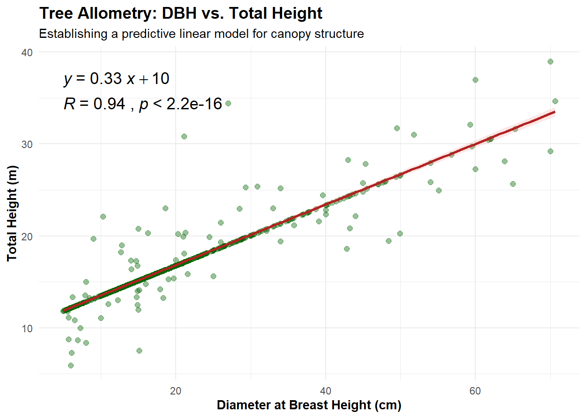

4 Chapter 4: Allometric Relationships and Statistical Correlation
While understanding species composition and spatial distribution is important, foresters also need to model how trees grow. Measuring a tree’s Diameter at Breast Height (DBH) is fast and easy, but measuring total height is time-consuming and prone to error in dense canopies.
If we can prove a strong mathematical correlation between DBH and Height, we can use DBH to predict heights across the entire forest. In this chapter, we will model this relationship using linear regression and visualize the statistical strength of our model.
4.1 Allometric Relationships and Statistical Correlation
While understanding species composition and spatial distribution is important, foresters also need to model how trees grow. Establishing a strong mathematical correlation between easy-to-measure variables (like DBH) and hard-to-measure variables (like Total Height or Biomass) is the foundation of forest biometrics.
In this chapter, we will model the allometric relationship between Diameter at Breast Height (DBH) and Total Height using linear regression, and visualize the statistical strength of our model.
4.2 Mathematical Models
The simplest relationship is a linear model, where we assume height increases at a constant rate as diameter increases. The equation for a simple linear regression is:
\[H = \beta_0 + \beta_1 \cdot DBH + \epsilon\]
Where: * \(H\) is the Total Height. * \(\beta_0\) is the intercept. * \(\beta_1\) is the slope of the relationship. * \(\epsilon\) is the error term.
However, in nature, trees eventually stop growing taller but continue to grow wider. This creates a curve. To model this using linear regression, foresters often apply a natural logarithm (\(\ln\)) transformation to both variables, creating a log-log model:
\[\ln(H) = \beta_0 + \beta_1 \cdot \ln(DBH) + \epsilon\]
4.3 Visualizing the Correlation
We can visualize this relationship and automatically calculate the equation and \(p\)-value using the ggpubr package.
##4.1 Plotting DBH vs. Height
To create publication-ready correlation plots that include mathematical equations and p-values, we will introduce a new package called ggpubr. It is an extension of ggplot2 designed specifically for adding statistical indicators to charts.
Note: If you haven’t installed it yet, run install.packages(“ggpubr”) in your R console.
library(tidyverse)
library(ggpubr) # For adding equations and p-values
# First, ensure our columns are clean numeric values and remove missing data
inventory_cor <- inventory_clean %>%
# Force height and DBH to numeric just in case they imported as text
mutate(
DBH_cm = as.numeric(DBH_cm),
Height_m = as.numeric(Height_m)
) %>%
filter(!is.na(DBH_cm), !is.na(Height_m))
# Create the scatter plot
p <- ggplot(inventory_cor, aes(x = DBH_cm, y = Height_m)) +
# Add the raw data points
geom_point(alpha = 0.4, color = "darkgreen", size = 2) +
# Fit a linear model (lm) and draw the regression line with a confidence interval ribbon
geom_smooth(method = "lm", color = "firebrick", fill = "lightcoral", alpha = 0.2) +
# Add the regression equation to the plot (placed dynamically near the top)
stat_regline_equation(label.y = max(inventory_cor$Height_m, na.rm = TRUE) * 0.95,
size = 5) +
# Add the R-squared and p-value
stat_cor(aes(label = after_stat(paste(r.label, p.label, sep = "~`,`~"))),
label.y = max(inventory_cor$Height_m, na.rm = TRUE) * 0.88,
size = 5) +
# Format the labels and theme
labs(
title = "Tree Allometry: DBH vs. Total Height",
subtitle = "Establishing a predictive linear model for canopy structure",
x = "Diameter at Breast Height (cm)",
y = "Total Height (m)"
) +
theme_minimal() +
theme(
plot.title = element_text(face = "bold", size = 14),
axis.title = element_text(face = "bold")
)
# Display the plot
print(p)
Figure 4.1: Linear regression model of DBH versus Total Height.
Interpreting the ResultsWhen analyzing the plot, the statistical outputs generated by ggpubr tell us the viability of our model:
The Equation (\(y = mx + b\)): Tells us the specific mathematical relationship (how much \(y\) increases for every unit of \(x\)).
The \(R\) value (Correlation Coefficient): Indicates the strength of the relationship. A value closer to 1 means that DBH is an excellent predictor of Height.
The \(p\)-value: Tests the null hypothesis. A \(p\)-value of \(< 0.05\) indicates that the relationship is statistically significant and not due to random chance.
4.4 Estimating Missing Heights
In dense tropical canopies, measuring the total height of every tree using a laser hypsometer is often impossible. Consequently, field crews usually only measure the diameter (DBH) for all trees and take height subsamples.
To map canopy structure across our entire plot, we can estimate the missing tree heights using established allometric equations. The BIOMASS package in R provides a seamless way to do this. We will use the regional Weibull allometric model developed by Feldpausch et al. (2012)4 specifically calibrated for South American (Amazonian) forests.
# Install the BIOMASS package if you haven't already: install.packages("BIOMASS")
library(BIOMASS)
# Estimate height using the Feldpausch et al. (2012) model for South America
# retrieveH returns a list, and we extract the 'H' (Height) vector from it
estimated_heights <- retrieveH(D = inventory_sf$DBH_cm, region = "SAmerica")
# Add the newly estimated heights back into our spatial dataset
inventory_sf <- inventory_sf %>%
mutate(Height_m_allo = estimated_heights$H)
# Check the summary of our new heights
summary(inventory_sf$Height_m_allo)## Min. 1st Qu. Median Mean 3rd Qu. Max.
## 7.138 12.759 15.414 16.763 19.645 34.440Now that every tree has an estimated height based on Amazonian allometry, we can visualize the spatial distribution of canopy structure and biomass hotspots.
TR Feldpausch et al., “Tree Height Integrated into Pantropical Forest Biomass Estimates,” Biogeosciences 9, no. 8 (2012): 3381–403.↩︎